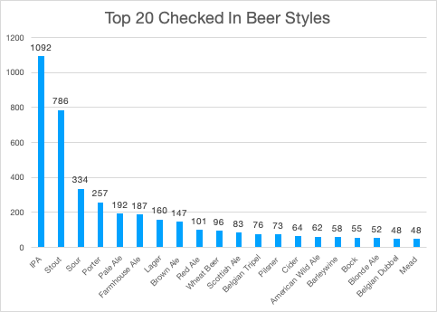

Variety is the spice of life. I love to try new experiences like rock climbing or curling. Living as a picky eater shouldn't be allowed so I like to try as much food as I can shove into my face. That mindset carries over to beer. I'll be the first person to admit that I'm a pretentious beer drinker. I believe that you should enjoy the beer that you paid for, and not just guzzle it down. For that reason I steer towards more flavorful beers. Sours bring a wonderful complexity with fruit and acidity. Stouts and porters pour like a motoroil but can taste like a fudge brownie. And if it is barrel aged?! Sends chills down my spine with excitement! Want a super juicy beer that will remind you of grapefruit, apricot, peach, or orange? Throw an IPA my way! Barleywines, kellerbiers, wheat beers, mead, pilsners, and more. The amount of variety in beer is a wonderful way to branch out and see what you like. For the data, I cleaned up the categorizations to be a general category rather than a subcategory. It didn't surprise me that IPAs and Stouts were the two highest check ins. I love both styles, but they are also the two most popular styles that breweries make. They tend to steer towards customer preferences and at the end of the day it is all about what customers are drinking and what generates revenue.
